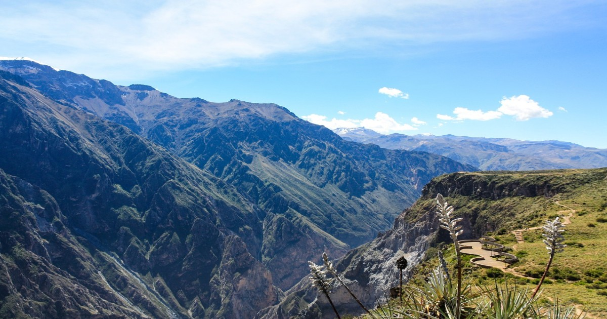

Galerias de Arte
Barranco es el distrito bohemio y artístico de Lima, hogar de varias galerías de arte que destacan por su creatividad y propuestas innovadoras
Principales Atractivos
Galería Lucía de la Puente
un espacio de arte contemporáneo en Barranco, Lima, que exhibe obras de artistas peruanos e internacionales. Fundada en 1995.


Horarios y Ubicación
- Ubicación:Lunes a Viernes: 10:00 a.m. - 7:00 p.m.Sábados: 11:00 a.m. - 7:00 p.m Domingos: Cerrado
- Horarios:El convento está abierto de 9:30 a.m. a 5:30 p.m.
- Costo de entrada:El acceso es libre para los visitantes.
Galería del Barranco
Es una galería de arte y tienda que exhibe y vende obras de artistas peruanos, desde pinturas y esculturas hasta artesanías y diseño contemporáneo.
Horarios y Ubicación
- Ubicación:Av. San Martín 158, Barranco, Lima, Perú.
- Horarios:Lunes a Sábado: 11:00 a.m. - 8:00 p.m. Domingos: 11:00 a.m. - 6:00 p.m.
- Costo de entrada:Gratis.
Murales Urbanos
Vistos por todo Barranco, una cultura en la ciudad.
Consejos para Visitantes
- Lleva tiempo y disfruta sin prisas: Muchas obras tienen detalles y significados profundos, así que tomate el tiempo para apreciarlas.
- Seguridad: Mantén tus pertenencias seguras y evita mostrar objetos de valor.
- Ropa cómoda: Usa zapatos cómodos, ya que caminarás mucho por calles empedradas.
- Consulta horarios y exposiciones temporales: Algunas muestras cambian constantemente, revisa antes de ir para no perderte algo especial.